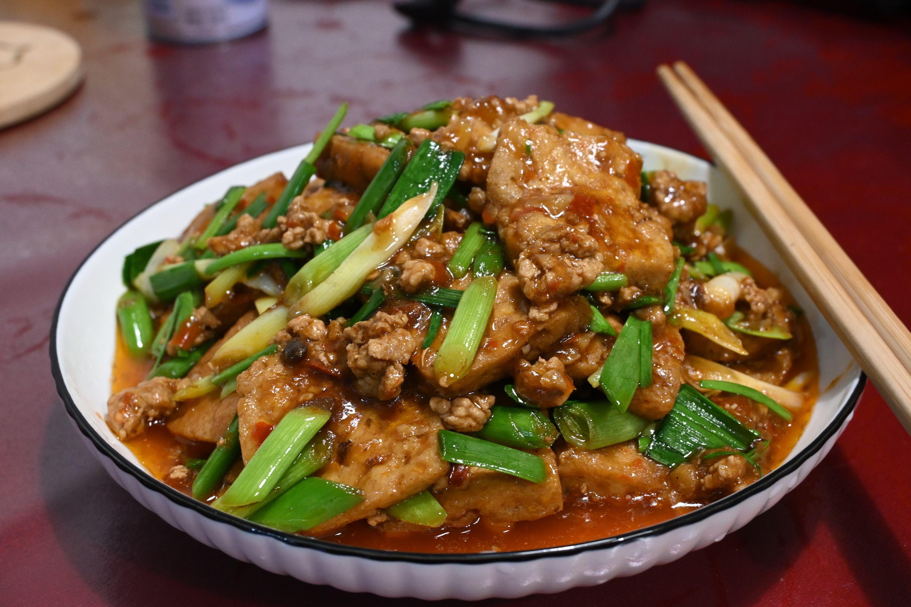
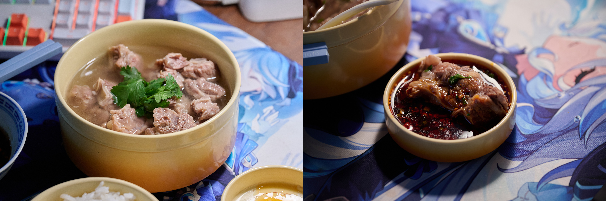
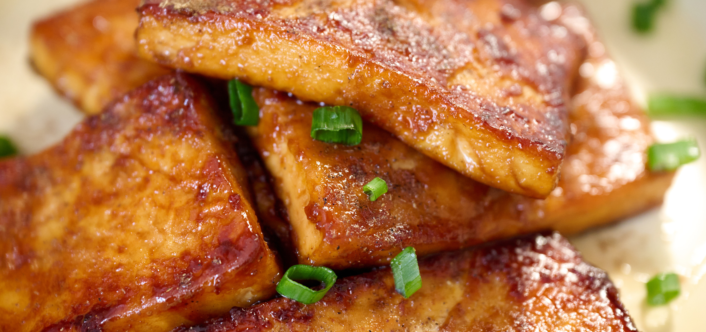
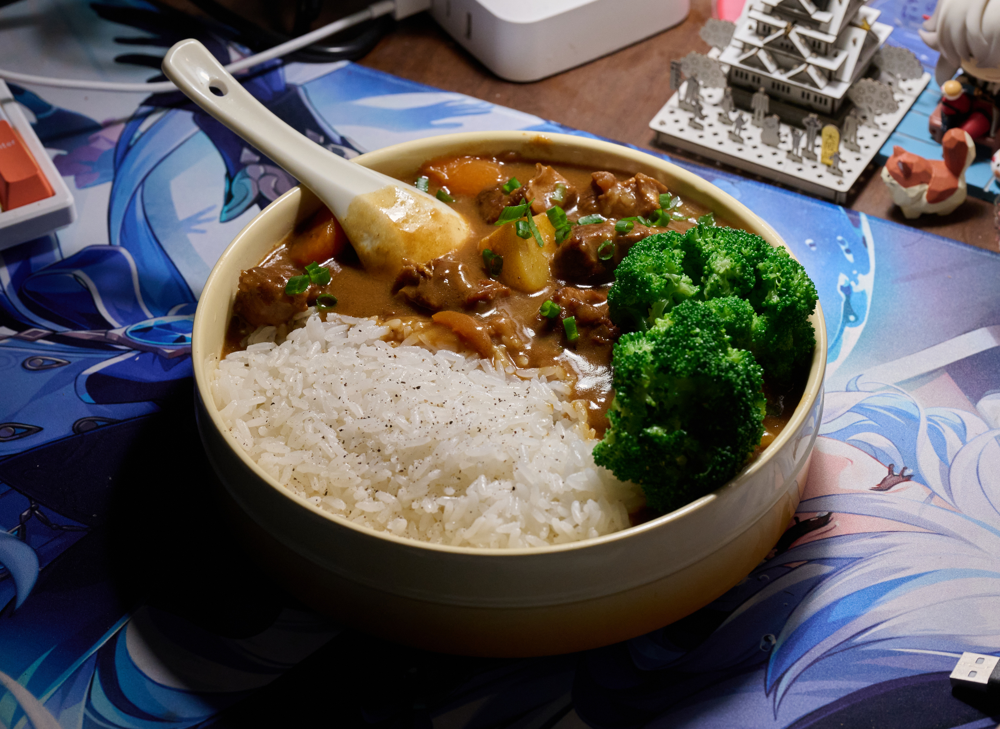
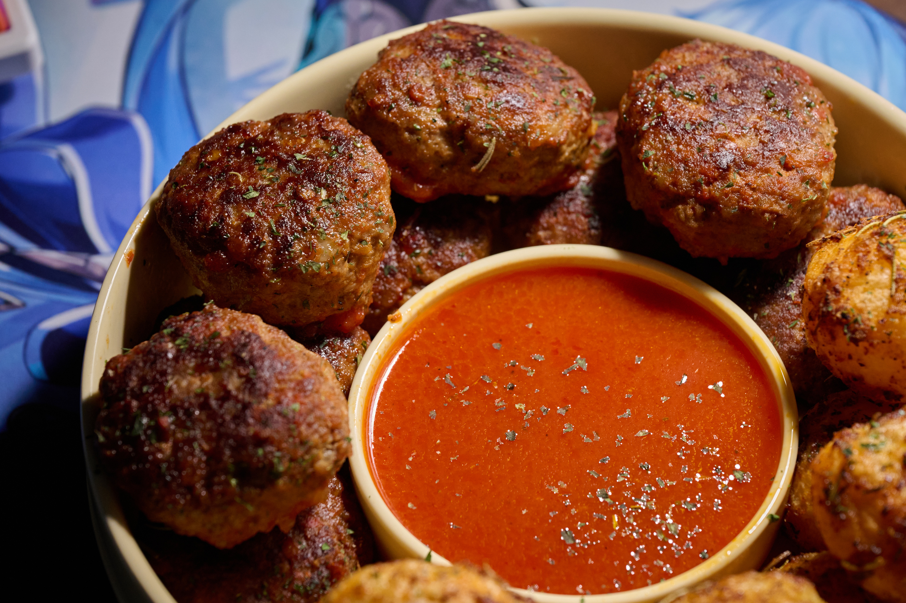
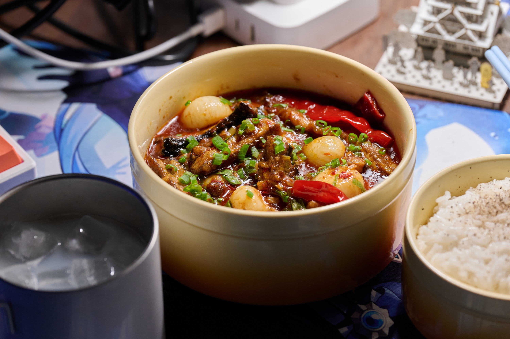
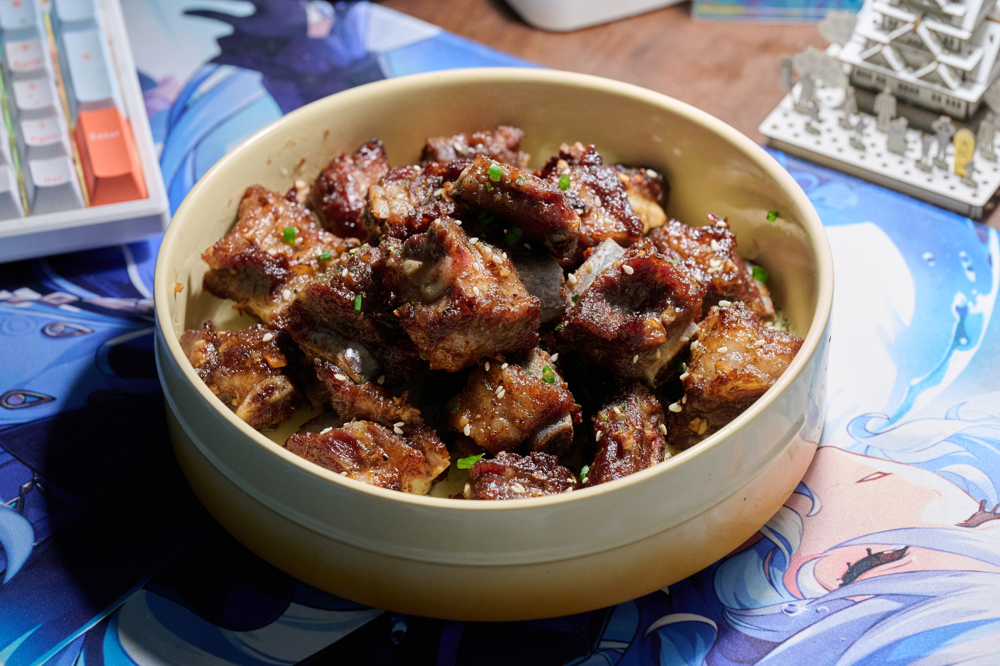
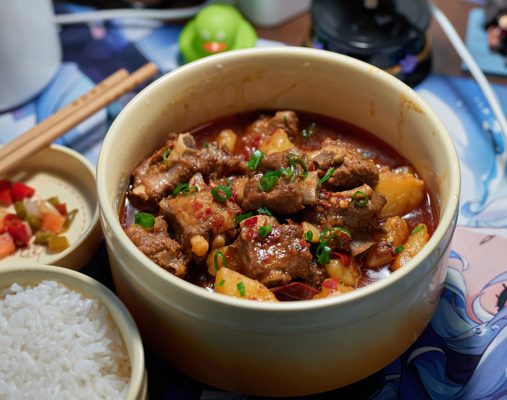
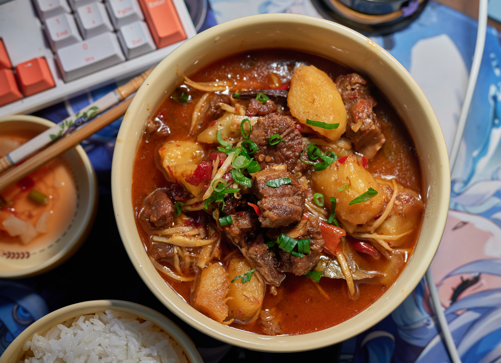

食无定味，适口者珍。
香碗
- 猪肉馅，加葱白、姜末，蛋清、红薯淀粉，盐。
- 摊蛋皮。
- 蛋皮裹住肉馅，上汽蒸，参考时间半小时。
- 切片，加汤。
- 肉馅中的葱白和姜末尽量剁细一些，避免影响口感。肉馅太粗则容易形成在内部形成孔洞，影响切开后的外观。
- 蛋皮用全蛋，可以加一点水淀粉让它更不容易破。烫蛋皮时锅上留一层油，用中小火。初始锅温不要太低，120°左右会缓慢凝固成一团，170°左右可行。
- 确保蛋皮彻底成型后可以轻松揭下，如果感觉很软，就是还没烫到位。别急着出锅，这玩意儿没那么容易糊。
- 蛋皮裹肉时可以先在蛋皮内侧抹一些水淀粉，便于其和肉馅结合。蛋皮适当裹紧一些，把接缝的位置压在下面，使其不易散开。
- 蒸肉时根据底盘材质不同，可以选择性地刷一层油，避免粘在上面。
- 冷却后切起来更容易些，热的时候容易破坏形状。
关于烫蛋皮的后续补充：前面提到的温度是我用铁质炒锅得到的结论。最近买了口平底不粘锅，发现十分适合煎蛋皮。哪怕温度不那么高，蛋液稍慢些凝固，也不会在重力作用下聚集成一团。
待补图。
肉末豌豆
从出门买材料到洗完碗不到一个小时，快得令我惊讶。
- 炒肉末
- 加豆瓣酱一起炒
- 加[煮过的]豌豆，炒匀
- 加水，调味，烧一会儿
- 加仔姜丝，勾薄芡，出锅
待补图。
烧豆腐

参照熊掌豆腐随便做的，味道不错，记下来。
- 豆腐切片，多油煎干。
- 肉末炒至油清亮，料酒去腥。
- 依序加入并炒香下列材料：豆瓣酱，葱姜蒜，豆豉。
- 加水，放入煎过的豆腐，水没过豆腐。
- 加酱油、盐调味，加细辣椒面提色，加糖使味道柔和。
- 大火烧开，中小火烧。
- 中途加蒜苗杆切成的粒，再烧会儿。
- 水剩余较少时加切成圈的小米椒和蒜苗叶。
- 大火勾芡，出锅。
- 肉末可以适当肥一些，只要煸炒到位、多烧会儿，只香不腻。
- 煎豆腐时油温可以高一些，确保豆腐水分充分流失、定型，有利于后续烧制时入味。
- 勾芡用的水淀粉别太稀了，做到芡汁下锅后短时间内就能收紧。
- 豆瓣酱和豆豉最好提前剁细，使之更容易释放香味。
麻婆豆腐
从N次制作中总结而来。
- 牛肉末煸干水分，加一点花雕酒去腥，加少许盐，小火煸至酥香，盛出备用。
- 豆腐切成小方块，冷水下锅，加盐，煮至沸腾，盛出备用。
- 小火，多油，把剁细的豆瓣酱炒熟，加葱白、蒜末、剁细的豆豉炒香。
- 加水和焯好的豆腐，水稍微没过豆腐。有条件就用高汤，没条件就加鸡精。
- 加少许糖，酱油调味，还可以加细辣椒面调色。
- 烧开，中小火咕噜一会儿，中途加入一部分之前煸好的牛肉末。
- 把蒜苗杆切成的颗粒和另一部分牛肉末也加入锅中。
- 用浓稠的水淀粉，开大火勾芡，次数视锅中情况而定。
- 最后加切碎的蒜苗叶，出锅，撒花椒面。
- 肉末从低油温开始炒会更容易散开。
- 焯水可以提前入味，去豆腥，以及增加豆腐韧性。还可以加点老抽提前上色。
- 焯完水的豆腐可以暂时就保存在热水中，提前捞出来的话容易粘在一起。
- 最开始给汤汁调味时应当适当偏淡，因为之后会蒸发一部分水分，而且材料都是入过味的。
- 提前把一部分牛肉末放进去和豆腐一起烧，可以增加豆腐和汤汁的香味；另一部分牛肉末在最后才加入，则是为了保留其干酥的口感。
- 多次勾芡间适当间隔那么十几二十秒，便于观察锅中的情况。最终使得汁水不能随意流动，但又不至于凝结成果冻质感。出锅后，芡汁要能把牛肉末、蒜苗、豆腐等托起来，不能全沉到下半部分去了。
- 如果芡汁浓厚，油又偏少，看起来会很不美观。然而在家中放太多油实在让我很有心理压力，所以来点trick：在勾芡前从锅中表层打出一勺含油比例比较高的汤汁，出锅后再浇回去。
- 豆腐极为脆弱，不能乱搅，建议用比较轻柔的“推”来代替搅拌。
- 用小火把花椒炒一炒，然后铡成末，现焙现用，其香气远甚于买来的花椒面。
待补图。
蛋包饭
大致可以分为三步：
- 准备填充物，一般而言是炒饭
- 煎蛋皮，在蛋液还没有完全凝固为固态，但无法自由流动时，把饭放到中间，将周围的蛋皮贴到饭的侧面
- 倒扣到盘子里，上手塑形
在经历了N次失败之后，我领悟了宇宙的真理——蛋包饭的底部原来是不用封口的！是的，只要放弃“让蛋皮全方位地包裹米饭”这个天真的想法，就可以避免把蛋包饭做成巨型蛋饺，或者因为操作时间过长导致蛋皮过老。
另：我认为比较适合蛋包饭的一个炒饭配料：胡萝卜丁、（焯水）豌豆、淀粉肠丁、玉米粒、番茄酱。
待补图。
葱香五花肉

懒人餐，建议搭配米饭做成猪肉盖饭。
酱汁：盐，清酒，蒜泥，柠檬汁，清水。虽然名字带“酱”，但并不粘稠。
- 五花肉切大片，中火，用香油煎出油脂，至表面微黄，控油
- 加酱汁，烧一会儿至大部分水分蒸发
- 勾薄芡
- 加入大葱碎，拌匀出锅
- （撒白芝麻、黑胡椒末和小葱碎）
Note：
- 煎五花肉时温度可稍高，时间稍长，将表面煎至微黄
- 并没有吃出放日式清酒和花雕酒的区别
清炖牛肋条

耗时虽长，但操作少，清闲时的懒人餐。
- 牛肋条用葱姜酒三件套焯水。
- 放进砂锅，加开水，少量姜片，一勺花雕酒，一丁点八角、香叶，小火开炖。
- 中途可以选择性地把姜和香料捞出。看个人喜好。
- 两小时后出锅，结束。
- 香料宁少勿多，保持在能丰富味道但又不喧宾夺主的程度。如果肉的品质不错，不加也行。
我通常不在清炖时放盐，喝汤前单独放，牛肉的味道则通过蘸水补充。自己常用的料汁有两种：
- 酱油，少量米醋，少量香油。可以选择性地加入蒜末。
- 蒜末和小米椒用热香激发香味，加入耗油、香菜末。可以选择性地来一勺红油辣子。
照烧豆腐

- 豆腐切片，用酱油和味淋腌味
- 沾淀粉，两面煎至焦黄
- 加酱油、味淋烧制收汁，出锅
- 个人会再撒一点花椒面，丰富其味道
就是咸 + 甜，具体使用糖、蜂蜜还是味淋倒无关紧要。豆腐也是标准的先煎后烧。把豆腐换成别的，譬如茄子，框架也是一样的。
青椒酿肉

- 肉末加姜末、盐、酱油、花椒粉、水，打匀，加淀粉，和匀
- 青椒切断，将肉馅塞入其中，两边沾上小麦粉
- 将塞了肉馅的青椒段用少量油煎，先给两边封口，再将青椒表面煎出微微的虎皮
- 加酱油、糖、水混合成的酱汁，烧制收汁
蒲烧茄子

“蒲烧”一词通常只用在部分鱼类上，但在这里茄子是鳗鱼cosplay，所以就叫蒲烧茄子。
料汁：咸甜即可，自己看着来，比如酱油加蜂蜜加水。
- 茄子去皮，切成十厘米左右长的柱子，上汽蒸十分钟左右
- 把茄子从中间剖开，划一些口子，就像书卷一样展平
- 把展平的茄子煎至两面微焦黄
- 加料汁，烧一会儿，收汁出锅
展平的茄子尽量薄一些，不然会难以烧透。
咖喱牛肉

- 洋葱切碎，少量油煸透，至彻底变色。
- 牛肋条切块，焯水。
- 姜片爆锅，煸炒牛肉，加水、之前煸过的洋葱、酱油、糖，根据喜好加八角、香叶等香料，开炖！
- 炖至中途，加滚刀切的萝卜块，当然，配菜选择都看个人喜好。
- 牛肉炖软后，加滚刀切的土豆块、咖喱块、牛奶，慢慢收汁，出锅！
我会在收汁时加一小块巧克力增加风味。
茄汁土豆肉饼

不知道确切的名字。
- 小土豆去皮，加盐煮十分钟左右。
- 土豆沥干，加橄榄油、辣椒粉、蒜粉、迷迭香、百里香、盐、黑胡椒，和匀。
- 土豆200摄氏度烤20分钟左右，至金黄色。我没有烤箱，用空气炸锅代替。
- 洋葱切碎，加少量蒜末，炒至半透，加入番茄泥，加糖、披萨草、盐、胡椒调味，适当熬制。
- 在牛肉末中加适量洋葱末、蒜末，加入鸡蛋、辣椒粉、芥末酱、面包屑、盐、胡椒，搅拌后制成小肉饼。
- 肉饼煎至两面金黄，将之前的番茄酱抹在饼上再煎会儿。
- 摆盘，收工！
- 完整的小土豆内部难以入味，因此外部下料应狠一些。
烧鳝段

- 鳝鱼斩成段备用。
- 大蒜温油浸炸至表面起皱，备用。
- 七成油温下鳝鱼，煸炒至油清亮后下少量盐、料酒，继续煸炒。
- 加入豆瓣酱、姜末，煸炒出红油。
- 加入泡椒段、泡姜片、之前炸过的大蒜，稍微煸炒，加水、酱油、料酒、糖，开始烧制。
- 数分钟后，稍微收汁，加入葱段，大火勾芡，出锅。
- 可以先用醋和盐抓洗鳝鱼，去掉表面的粘液，再切断。
蒜香排骨

空气炸锅真是偷懒神器，备菜简单，一锅出。
- 排骨泡去血水，加蒜末、姜片、酱油、料酒、耗油、糖、盐、黑胡椒、淀粉，和匀后腌制一会儿。
- 排骨表面裹一点油，空气炸锅180度加热28分钟，中途翻个面，收工。
- 蒜末要切细，量可以多一些，也可以用干蒜粉。
- 空气炸锅底部加一点水，可以避免排骨变得太干。
土豆烧排骨

- 排骨焯水，擦干。
- 少量油，将小排煸去水分，加酒去腥。
- 加豆瓣酱炒香，加姜、大葱段、花椒，小火炒出香味。
- 加开水，少许酱油，一点冰糖，小火烧四十分钟左右。
- 加土豆块，拣去姜片、葱段等，根据想要的汁水多少调整火力，烧至土豆软糯，出锅。
- 把排骨换成牛肋条，慢炖两小时，就是川式的土豆烧牛肉。炖煮时可以加干辣椒、八角、桂皮、香叶、干山楂片，末尾可以加仔姜丝，只要搭配和谐，可以自由发挥。

杂项
刀口辣椒/花椒
每次铡刀口辣椒都四处飞溅，打扫不易。可以用食品袋把焙香的干辣椒/花椒装起来，然后擀碎，再倒出来用刀铡。焙花椒面时同理。
后续补充：还是搅碎机好用，时代变了！
猪油
- 猪板油切大块焯水。
- 切均匀小块，凉水下锅，加大葱、去皮姜片，[加白酒、香料]，大火烧开，水蒸发得不多后转中小火。
- 时间适当时把姜葱捞走，无水后可以开始边熬边往外捞油。
高汤保存
可以熬一大锅，最后收至极浓，放凉后分装到小袋中冷冻保存，逐份取用。
狮子头
如果需要配肥瘦比，瘦肉部分千万别用过嫩的肉（如小里脊），口感会粉粉的，很糟糕。
茶泡饭
只需要煮饭和烧水，摆烂用。
米饭，盐，拌饭酱油，葱花，白芝麻，海苔丝，腌渍的话梅，乌龙茶。